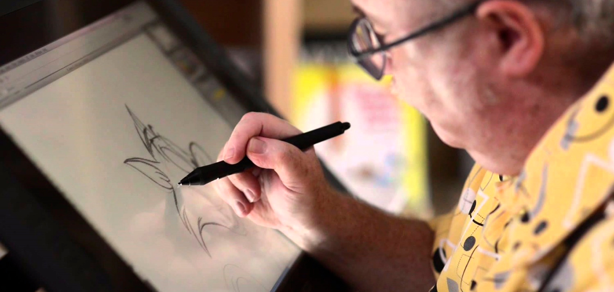
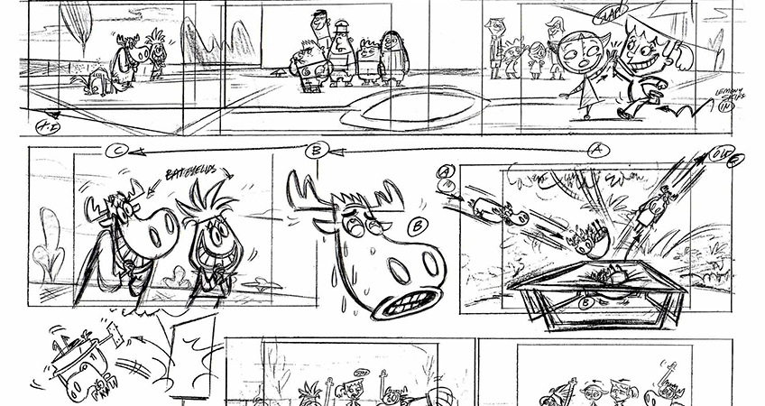
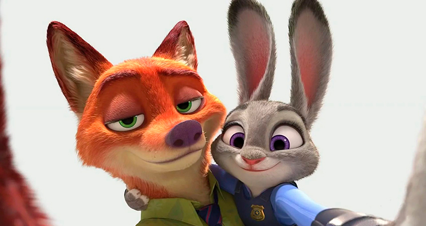

СОЗДАНИЕ ПРОСТОЙ АНИМАЦИИ СВОИМИ РУКАМИ
Многие люди считают, что для создания простой анимации своими руками в домашних условиях требуются специальные навыки и много времени. На самом деле для этого достаточно простых компьютерных программ и стандартных приложений операционной системы Windows.
Анимация своими руками при помощи стандартных программ ОС Windows
Анимация — последовательная демонстрация (показ) графических файлов, которая создает иллюзию движения объектов. Для ее разработки понадобится всего две стандартные программы, которые имеются почти на всех компьютерах с операционной системой Windows — Paint и Movie Maker. Первая позволяет создавать и редактировать графические рисунки, вторая — видео. Качество разработанной анимации будет зависеть от ваших способностей рисования.
1. Создание кадров

Открываем Paint. Выбираем на панели инструментов кисть, подбираем нужный цвет и рисуем на рабочем поле любой объект. Сохраняем рисунок в заранее созданную папку под именем «Кадр 1». Затем снова рисуем тот же объект, но немного меняя его положение (например, в первом кадре стрелка часов может стоять на отметке «12», а на втором на «1»). Сохраняем изображение под именем «Кадр 2». Таким образом, разрабатываем несколько кадров. Чем больше их количество, тем плавней будет движение объекта в анимации.
2. Соединение нарисованных кадров в один ролик
Открываем программу Movie Maker. В панели задач выбираем «Импорт изображений» и загружаем кадры. Они будут отображаться в панели «Сборник». Поочередно переносим их на расположенную внизу дорожку. Нажимаем на «Отображение шкалы времени». Если не изменять стандартное для программы время показа, объект анимации будет двигаться резко и медленно. Чтобы изменить это, щелкаем по кадрам и передвигаем появившуюся полоску влево. Кадры будут становиться уже, а значит, время их показа уменьшится.
3. Озвучка анимации
К анимации можно добавить комментарии, записав их через микрофон, или поставить фоновую музыку. В первом случае заходим во вкладку «Сервис» и выбираем «Шкала времени комментария». Затем жмем «Запустить», озвучиваем персонажа или читаем закадровый текст. По завершению нажимаем «Остановить», сохраняем комментарий, добавляемего в проект, а потом на звуковую дорожку в нижней панели.
4. Сохранение анимации в нужном формате
Выбираем пункт меню «Файл» и последовательно кликаем «Сохранить файл фильма», «Показать дополнительные варианты», «Другие варианты». Затем выбираем формат будущего видеофайла. Рекомендуем сохранять анимацию в популярном формате (например, AVI, MPEG, PAL, и др.), чтобы ее можно было воспроизводить на многих плеерах и проще закачать на YouTube.
GIF анимация («гифка») состоит из отдельных кадров, для которых задается такой параметр, как длительность показа до появления следующей картинки. Она поддерживает лишь 8-битную палитру, из-за чего отображается не больше 256 цветов, что является преимуществом перед другими форматами. Наиболее часто анимационные GIF файлы применяются как элементы навигации на сайтах и рекламные баннеры.
Наиболее простой программой для создания GIF анимации является Easy GIF Animator Pro. Скачиваем ее, открываем, в главном окне кликаем «Создать новую анимацию», после чего откроется «Мастер анимации». Далее добавляем изображения (подбираем в интернете или самостоятельно рисуем в программе Paint). Нажимаем «Вперед». Устанавливаем продолжительность каждого кадра. При необходимости выбираем показ анимации по кругу.
Если подобраны изображения разных размеров, программа предлагает несколько вариантов позиционирования картинок относительно наибольшего изображения:
- по центру кадра
- левый верхний угол кадра
- увеличить меньшие картинки до размера самого большого изображения
Жмем «Финиш». Далее открывается окно сопциями для редактирования анимации. Выполнив необходимые настройки, в меню выбираем «Файл», а затем«Сохранить».
Также GIF анимацию можно создать при помощи программы UnFREEz. Для этого достаточно разработать кадры и «перетянуть» их в окно программы. Затем нужно выполнить указание времени задержки между кадрами и включение цикличности. В конце необходимо нажать «Make Animated GIF».
Программы для создания анимации
Pensil
Программа с большим функционалом и понятным интерфейсом. Она позволяет создавать рисованных персонажей и «оживлять» их в 2D-анимации. Ее возможности:
- набор растровых и векторных инструментов для создания и обработки изображений
- возможность рисовать пером или кистью
- создание фигур с помощью «ломаной линии»
- импорт фона
- работа со слоями
- добавление аудиофайла для экспорта в формате swf
Synfig Studio
При помощи этой бесплатной программы можно создать простую анимацию в 2D-формате — похожую на ту, которая используется в художественных фильмах. Ее преимущества:
- функция «tweening», позволяющая автоматически разработать промежуточные кадры
- наложение градиента
- поддержка векторных элементов
- искажения
- фильтры
- инструменты для создания фракталов
ToonBoom Studio
Программа имеет два рабочих режима: Рисования и Сценарный. Содержит необходимые инструменты для разработки векторных рисунков: кисть, карандаш, «прямоугольник», «ломаная линия», «эллипс». Функции: рисование с применением планшета, векторизация растровых изображений, наложение анимированных сцен на реальный видеоролик, экспорт данных (например, отдельных фрагментов из фотографий).

Blender
Это популярная программа для создания 3D-анимации. Ее преимущества:
- реалистичная имитация предметов (например, тканей и волос) и явлений (столкновения объектов, ветра)
- большой набор функций для создания интерактивных игр
- широкий ассортимент примитивов (цилиндров, сфер, кубов, колец), из которых легко создаются собственные модели;
- поддержка нелинейного редактирования
Другие популярные программы для создания анимации своими руками: Plastic animation paper, Creatoon, 3D Studio Max, Adobe Image Ready, MyPaint, Jasc Animation Shop.